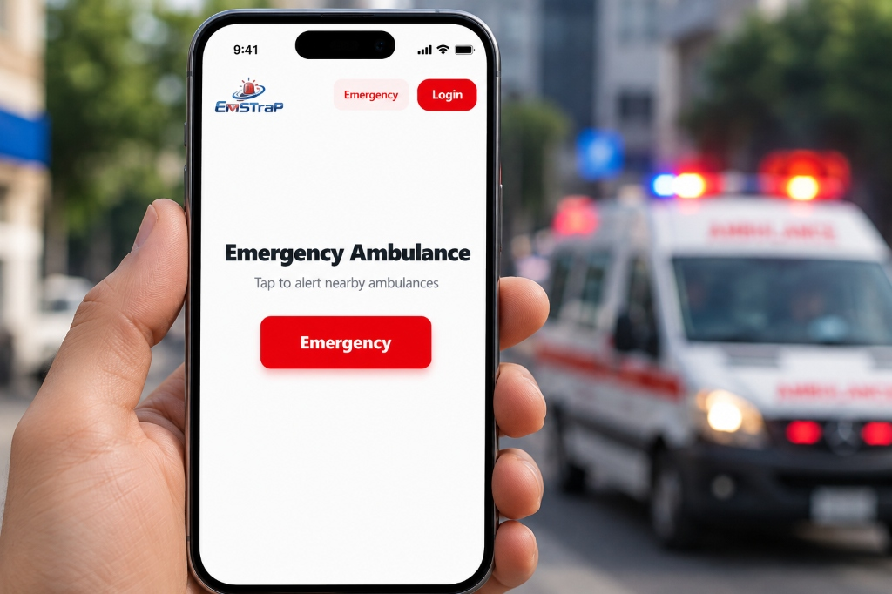

EMSTRAP CONNECT
One Connected Network for Every Emergency
EMSTRAP Connect is a B2G emergency communication and incident-reporting platform built for Smart Cities, Police Departments, municipal authorities, and public-safety organizations. It creates a connected channel between citizens, authorities, emergency responders, and control rooms—helping critical information reach the right people faster.

The Problem
Emergency response is often disconnected.
When an emergency occurs, information can come from multiple sources—citizens, police officers, control rooms, security teams, or people at the scene.
Without a unified system, authorities may face:
EMSTRAP Connect brings these reports into one connected emergency-response ecosystem.
What is EMSTRAP Connect?
EMSTRAP Connect acts as a digital communication bridge between citizens and government emergency-response systems.
A citizen can report an emergency with relevant information such as:
Workflow Integration
The platform processes the report and connects it with the appropriate emergency-response workflow.
Location-Based Association
When multiple people report the same incident, EMSTRAP can identify reports coming from the same location and associate them with a single incident, reducing unnecessary duplicate cases.
B2G Emergency Infrastructure
EMSTRAP Connect is designed for government organizations that need a centralized and scalable way to manage emergency information.
Smart Cities
Smart City authorities can use EMSTRAP Connect to create a connected emergency-reporting layer across the city.
- • Receive citizen emergency reports
- • Identify incident locations
- • Monitor incidents across the city
- • Coordinate with emergency departments
- • Improve communication between agencies
- • Build a centralized view of emergency activity
Police Departments
Police departments can use EMSTRAP Connect as an additional channel for receiving and managing emergency reports.
- • Citizen incident reporting
- • Location-based incident identification
- • Multiple reports for a single incident
- • Incident prioritization
- • Communication with response teams
- • Incident tracking
- • Emergency records and reporting
Municipal Authorities
Municipal bodies can use the platform to receive and coordinate reports related to public safety and city-level emergencies.
- • Road accidents
- • Public safety incidents
- • Infrastructure-related emergencies
- • Dangerous situations
- • Crowd-related incidents
- • Other incidents requiring government attention
How EMSTRAP Connect Works
A structured, location-aware incident journey from citizen trigger to verified case resolution.
01 — Report
A citizen or authorized user reports an emergency through EMSTRAP Connect.
02 — Locate
The system captures the incident's latitude and longitude to identify where the emergency has occurred.
03 — Identify
The platform checks whether there is already an active incident associated with that location. If another person has already reported the same emergency from the same location, the new report can be associated with the existing incident.
This gives authorities a clearer picture of the situation.
04 — Analyze
The available incident information can be analyzed to understand the nature and urgency of the emergency.
This helps transform raw reports into information that can support emergency-response decisions.
05 — Prioritize
Incidents can be assigned different levels of priority based on their severity and available information.
This helps response teams focus their attention where it is needed most.
06 — Connect
The incident can then be connected with the appropriate authority, department or emergency-response team.
07 — Coordinate
Authorized personnel can monitor the incident and coordinate the required response.
08 — Resolve
The incident continues through its response lifecycle until it is resolved and closed.
One Incident. Multiple Reports. Zero Confusion.
Imagine a major road accident. Five people at the location report the accident.
More information. Less duplication. Better visibility.
Location Intelligence
Know where the emergency is happening.
Location is one of the most important pieces of information during an emergency. EMSTRAP Connect uses latitude and longitude from emergency reports to help identify and organize incidents geographically.
Exact Scene
Where an emergency occurred with high precision.
Nearby Incidents
Whether an active incident already exists nearby.
Report Origins
Where multiple reports are coming from across callers.
High-Activity Zones
Which areas are experiencing more incidents citywide.
This creates a foundation for location-aware emergency coordination.
AI-Assisted Incident Understanding
Turn emergency reports into actionable information.
Emergency reports can contain unstructured information such as text descriptions and images. EMSTRAP Connect can use AI-assisted analysis to help understand the information provided and identify important incident characteristics.
“There has been a road accident. Two people appear injured and one person is unconscious.”
Governance & Oversight: The purpose of AI is to assist emergency teams with faster information processing and decision support, while human authorities remain responsible for operational decisions.
Designed for Smart Cities
A Connected Emergency Layer for the City
A Smart City is not only about connected roads, cameras and sensors. It is also about connecting people, information and government services. EMSTRAP Connect can become part of a city's broader digital public-safety ecosystem.
The platform can serve as a central communication layer connecting different participants in the emergency-response ecosystem.
Built for Police Departments
From citizen report to coordinated response.
Police departments can use EMSTRAP Connect to create an additional digital channel between the public and emergency-response teams. Instead of relying entirely on traditional communication channels, departments can receive structured incident information that includes location and supporting details.
Citizen Reporting
Receive emergency and incident reports digitally.
Location-Based Incidents
Know where an incident is being reported.
Duplicate Detection
Associate multiple reports from the same location with one active incident.
Priority Management
Identify incidents requiring greater urgency.
Incident Tracking
Follow the progress of an incident from report to resolution.
Centralized Information
Keep incident information organized in one place.
Built for Multiple Government Agencies
EMSTRAP Connect can be designed to support collaboration between different departments.
This allows different agencies to work around a shared incident, rather than operating with completely separate information.
Key Benefits
Faster Information Flow
Reduce unnecessary communication steps and get critical information to the appropriate teams faster.
Better Incident Visibility
Give authorized personnel a clearer view of active emergencies.
Reduced Duplicate Reporting
Multiple reports from the same incident can be connected to one incident.
Location-Based Awareness
Use geographic information to understand where incidents are occurring.
Structured Emergency Information
Turn citizen reports into organized incident information.
Better Coordination
Help different emergency-response stakeholders work around the same incident information.
Scalable for Cities
Designed with government and city-level deployment in mind.
Who Can Use EMSTRAP Connect?
Government & Public-Safety Organizations
Smart City Missions
Create a connected emergency-response ecosystem across the city.
Police Departments
Improve citizen-to-police incident reporting and coordination.
Municipal Corporations
Manage city-level emergency and public-safety reports.
Emergency Control Rooms
Centralize incoming emergency information.
Public-Safety Authorities
Improve visibility and coordination across emergency operations.
Government Institutions
Build connected emergency-response capabilities across departments.
A Connected Approach to Public Safety
“EMSTRAP Connect is a B2G emergency communication and incident-reporting platform that connects citizens, police departments, Smart Cities and emergency-response authorities through a unified, location-aware incident management system.”
Connect Your City to a Smarter Emergency Response
Build a more connected emergency-response ecosystem for your city, department or organization.